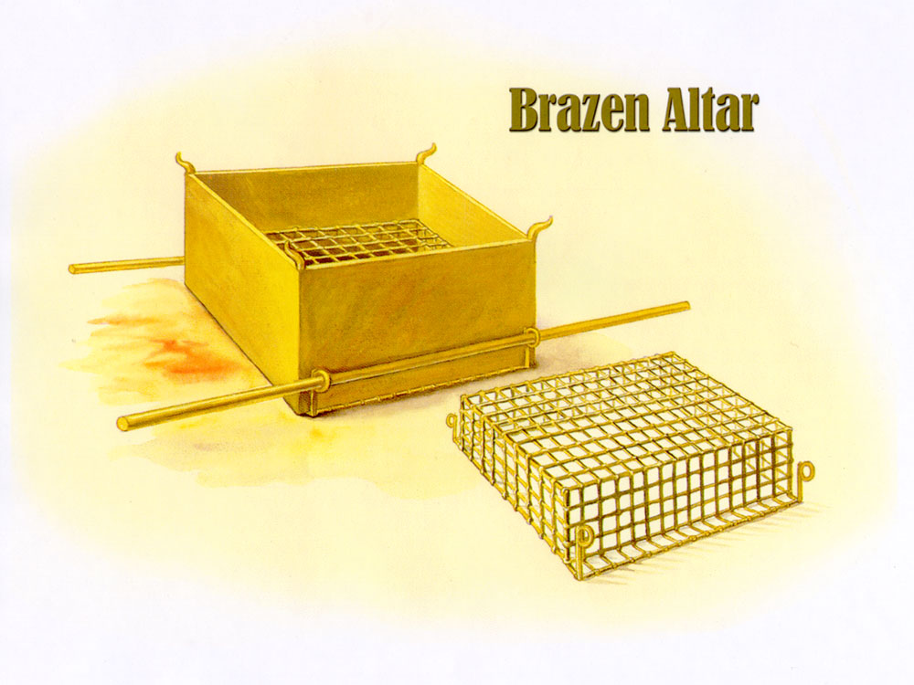

| 讀 | 默想、禱告 | |
|---|---|---|
|
1 「你要用皂莢木做壇。這壇要四方的，長五肘，寬五肘，高三肘。 2 要在壇的四拐角上做四個角，與壇接連一塊，用銅把壇包裹。3 要做盆，收去壇上的灰，又做鏟子、盤子、肉鍤子、火鼎；壇上一切的器具都用銅做。 4 要為壇做一個銅網，在網的四角上做四個銅環，5 把網安在壇四面的圍腰板以下，使網從下達到壇的半腰。 6 又要用皂莢木為壇做槓，用銅包裹。 7 這槓要穿在壇兩旁的環子內，用以抬壇。 8 要用板做壇，壇是空的，都照著在山上指示你的樣式做。」 |
「壇」（1節）指獻祭用的「銅壇」，又稱為「燔祭壇」，建成後一直保存到所羅門的時代。銅祭壇長2.25米，寬2.25米，高1.35米，是會幕外面院中最大的物件。「銅」象徵審判，銅祭壇和壇上的一切用具都是用銅做的，表明了神公義的要求。表明罪人絕不能逃避神的追討。獻祭時的高溫將使裡面的皂莢木完全炭化，落在審判裡的人也都是絕望的，「因為罪的工價乃是死」。 沒有祭牲的祭壇顯明了神的公義和審判，有了祭牲的祭壇成為流出神赦免恩典的地方。因著神的兒子基督「將自己無瑕無疵獻給神」，成為「更美的祭物」，「一次被獻，擔當了多人的罪」神的公義就在祭壇得著滿足，神的憐憫也在祭壇得以流出，公義的祭壇就成了恩典的出口。 | |
|  | ||
|
9 「你要做帳幕的院子。院子的南面要用撚的細麻做帷子，長一百肘。 10 帷子的柱子要二十根，帶卯的銅座二十個。柱子上的鉤子和杆子都要用銀子做。 11 北面也當有帷子，長一百肘，帷子的柱子二十根，帶卯的銅座二十個。柱子上的鉤子和杆子都要用銀子做。 12 院子的西面當有帷子，寬五十肘，帷子的柱子十根，帶卯的座十個。 13 院子的東面要寬五十肘。 14 門這邊的帷子要十五肘，帷子的柱子三根，帶卯的座三個。 15 門那邊的帷子也要十五肘，帷子的柱子三根，帶卯的座三個。 |
「帳幕的院子」（9節）是從地上分別出來的一個範圍，以色列人在外面可以遠遠地看見帳幕，也知道帳幕是神與他們同住的記號；但如果他們不進入院子，就不能享用到神所預備的赦免、恩典和榮耀的豐富。今天我們進入「院子」，就是進入基督裡。人只有活在基督裡，才能享用神為我們所預備的一切豐盛。 當稱謝進入他的門；當讚美進入他的院。當感謝他，稱頌他的名！（詩100：4） |
|
|
16 院子的門當有簾子，長二十肘，要拿藍色、紫色、朱紅色線，和撚的細麻，用繡花的手工織成，柱子四根，帶卯的座四個。 17 院子四圍一切的柱子都要用銀杆連絡，柱子上的鉤子要用銀做，帶卯的座要用銅做。 18 院子要長一百肘，寬五十肘，高五肘，帷子要用撚的細麻做，帶卯的座要用銅做。 19 帳幕各樣用處的器具，並帳幕一切的橛子，和院子裡一切的橛子，都要用銅做。」 |
進入院子只能從唯一的門進出。主耶穌說：「我就是門；凡從我進來的，必然得救，並且出入得草吃」（約十9），「我就是道路、真理、生命；若不借著我，沒有人能到父那裡去」（約十四6）。 院子的「帷子」是潔白的，只有門簾是彩色的，非常吸引人。這「簾子」的織法和材料與帳幕的門簾完全一樣（二十六36），表明是基督用豐盛的生命和恩典吸引人來到祂面前。 | |
|
20 「你要吩咐以色列人，把那為點燈搗成的清橄欖油拿來給你，使燈常常點著。 21 在會幕中法櫃前的幔外，亞倫和他的兒子，從晚上到早晨，要在耶和華面前經理這燈。這要作以色列人世世代代永遠的定例。」 |
人人都要接受神的審判，但審判的結果不同。神的審判對於淪喪的人來說是滅亡，對得救的人來說卻是性格塑造。正如橄欖因著破碎而流出橄欖油，人的肉體老我也要經歷神的破碎，屬靈的生命才能得著釋放。因此神的啟示接著就從象徵審判的各種銅器（19節），轉到用來發出生命之光的「清橄欖油」（20節）。 | |
| 親愛的天父上帝，我感謝祢，我要以感謝進入祢的門，我要以讚美進入祢的院，以嘴唇的讚美獻上為祭，又獻上感恩的心。（我要為OOOOOOO感謝祢）。主耶穌，祢以自己為神的羔羊，獻上為祭，滿足了銅祭壇公義的審判罪得赦免的代價，我願意接受祢寶血的救贖與潔淨，求祢赦免我在OOO事情上，埋怨的罪，懇求祢，讓我今天的工作中，持續走在祢聖潔的引導中，使我做的決定合祢的心意。奉耶穌基督的名禱告。阿們！ | ||